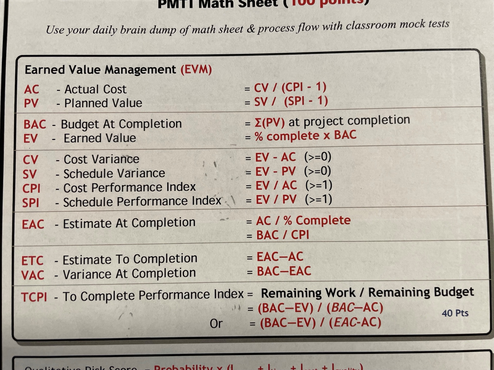

CMAR GMP EVM Alternative
An Alternative Approach to Earned Value Management Without Resource-Loaded Schedules
Research Overview
This white paper presents an alternative approach to traditional Earned Value Management (EVM) tailored specifically for complex construction projects delivered under Construction Manager at Risk (CMAR) contracts with Guaranteed Maximum Price (GMP) provisions.
Target Project Scenario
- Complex Construction Project, $50M – $250M
- 20–40 Subcontractors
- Custom Vertical Construction – Limited to No Repetitive Work Activities
- Guaranteed Maximum Price (GMP) Contract Between Owner and CMAR
- Lump Sum Subcontracts (Especially Hard Bid)
- Resource Loaded Schedule Not Planned / Procured
Traditional EVM Overview
EVM is a tool that combines schedule, cost, resources, and performance into one reporting framework.

Key Definitions
- Planned Value (PV) or Baseline: Original baseline schedule and estimate spread over time
- Earned Value (EV): Physical progress or work put in place against your PV
- Actual Value / Actual Cost (AV or AC): Actual cost incurred to complete the physical progress
- Forecast: Physical work still needing completion
Key Metrics
SPI (Schedule Performance Index)
SPI = EV / PV
Measures earned progress to planned progress
- = 1.0: On target
- > 1.0: Ahead of schedule
- < 1.0: Behind schedule
CPI (Cost Performance Index)
CPI = EV / AC
Measures earned progress to actual cost incurred
- = 1.0: On budget
- > 1.0: Under budget
- < 1.0: Over budget
Traditional EVM Considerations
- Increased expense to Owner for CMAR scheduling / estimating / accounting staff
- Increased expense to Owner for Subcontractor estimating / reporting / accounting staff
- Direct Labor Cost method requires access to Subcontractor "books" through GMP Subcontracts or Integrated Project Delivery (IPD) Contract
- Ideal when work activities are repetitive and easily measurable
- Level of Work Breakdown Structure (WBS) should be "right sized" to Owner requirements
- Benefit of EVM is dependent on accuracy of estimates, reporting, and tracking
⚠️ Key Challenge: If a contractor struggles to accurately collect and report labor data in accordance with Owner's desired WBS, then the data will be flawed and inform the Owner incorrectly.
Key Issues Preventing Traditional EVM
The following issues arise when assessing whether traditional EVM should be utilized for CMAR/GMP projects:
1. Direct Labor Cost Access
Project includes hard bid lump sum subcontracts where CMAR and Owner have no access to direct labor costs from subcontracts.
2. Resource Loaded Schedule
Project did not require Resource Loaded Schedule in CMAR estimate, prior to construction schedule development, or as part of subcontractor bid requirements.
3. Non-Repetitive Work
Custom vertical construction with limited repetitive activities makes traditional progress measurement more complex.
Alternative Approach: EVM-Alt
This research proposes an alternative methodology that enables project teams to track meaningful KPIs and performance metrics without requiring a fully resource-loaded schedule or access to subcontractor labor cost data.
Benefits of EVM-Alt
- Works within existing CMAR/GMP contract structures
- Does not require subcontractor "open book" agreements
- Leverages available project data (pay applications, schedule progress)
- Provides actionable performance indicators for project leadership
- Scalable across multiple project types and sizes
Real-World Application
This methodology was developed and applied on the Charlotte Douglas International Airport (CLT) Concourse A Expansion Phase II project — a complex aviation construction program delivered under CMAR/GMP contract structure.
Project Details
- Project: CLT Concourse A Expansion Phase II (CAP2)
- Contractor: JE Dunn-McFarland Joint Venture
- Contract Type: CMAR with GMP
- Delivery: Complex aviation terminal expansion